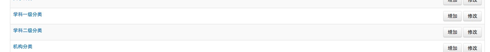
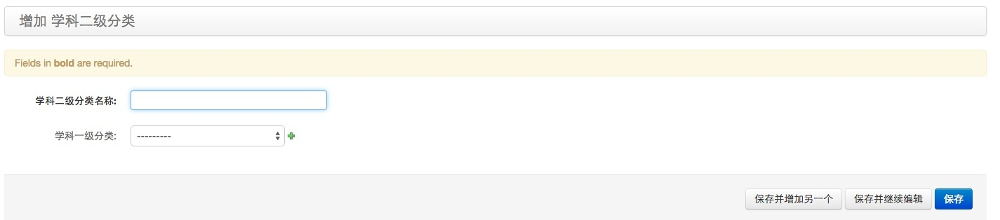
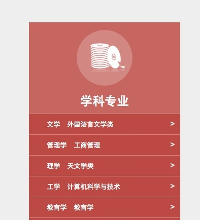

之后博客里Open edX相关的文章都用英文标题
最近收到好些来自国外的邮件，由于Open edX比较新，我们又是Open edX重度用户，平时解决的问题，整个社区可能都用得到。前几天写了《Code Grader in Open edX》,大概是由于题目是英文的缘故，昨晚就收到了3封来自世界各地的邮件，咨询关于Code Grader in Open edX的细节.其中一个妹子说道
I am interested on the topic you have discussed. I know the page is Chinese but thanks to google translate I could understand the page :)
为了方便他们搜索，题目之后都用英文，如果之后英文表达能力有长进，内容也用英文写好了（痛下决心学英语真是 T_T）
课程分类的问题，我去年有写过一篇文章:在edX中为course扩充字段,虽然目的是拓展edx的course模型，恰好举的例子是为课程添加分类。
而后同@MT聊天时发现，课程分类竟是个刚需，对于社区版而言。后来课程分类有被添加到localization and development in china，但迟迟没有人给出一个开箱可用的解决方案。
当时年轻，在在edX中为course扩充字段中采用的方法十分dirty，侵入性很强，相比之下，反而是最初的设计优雅许多（我目前公司内部项目的课程分类，的确也是采用这个方案），我在那篇文章中有提及：
- 自己写了个django app加入到lms/djangoapps里。app.models中有course_id字段
- 自己写个首页
- 在admin里管理首页的内容
写出来的效果大概是这样:
后台管理： 
添加分类 
首页呈现 
这里的核心观念是，把课程视为一种资源，course_id是课程的标识符。
今天群里就这个问题，又讨论得挺激烈的
@MT做了精彩的需求描述：
课程分类的产品设计： 1 在django admin实现一级二级分类的管理 2 在studio实现对课程归属分类的管理 3 在首页实现对分类的筛选和展示
我私下同@MT聊的时候，@MT谈到老师是否可以在studio中决定分类。这的确是一种更加去中心化的方式，属于产品形态的问题，虽然有趣，但我对此不了解，就不方便谈论了。
技术上这两种方式可以共存，至于最后决定首页如何呈现，这是个产品层面的问题，就留给网站拥有者决定好了
思路
下面就技术层面谈谈思路
这是我接触edx不久所做的设计，很粗糙，槽点很多orz. 理念背景需要交代下，我当时把课程视为被资源实体，是内容管理的对象，我把首页视为一个内容管理平台（记得edx开发团队有在google group里说过edx.org也是这样设计的），网站的拥有者决定了课程的归属（分类）
终于到我比较擅长的技术问题上来啦，主场作战哈哈哈，如果你熟悉django的话，你知道只要写一个model来定义课程类，这个类至少需要以下2个关键属性:
- course_id
- cource_category(外键)
之后至于做几级分类，随你的便，因为cource_category仅仅是个外键！
然后把这个model注册到admin里，就可以在django admin里管理课程啦！
最后只需要把model传递到首页的模板里，加点调料（css/js），就可以新鲜出炉啦！
事后我反思这个设计，发现其实可以采用django-mptt,这样分类的层级会更加自由和动态。
相比具体的实现，我更关注架构上的问题，上面的这种做法采用的是django app的方式，而不是我最初那篇文章提到的侵入式，这样一来，与edx的耦合度很低，完全可以通过一个脚本，以插件的形式自动化插入到edx中，这样就不存在升级的问题。因为我们首页课程分类与edx的关联仅有course_id！
松耦合，高内聚是我特别喜欢的设计口味
edx是冲着构建生态去的，就这点而言，具体的实现很可能随时会被替换，更好的实现会层出不穷，为了能随时升级和替换组件，低耦合是多么诱人的特性呀。
它让我们可以随时甩下历史负担，迎接未来不是么
后记
我觉得还是有必要理清一下，课程分类和edx-search各自的定位问题。我此前一直将课程分类视为网站拥有者的权利，是一种引导用户和呈现资源的方式。尽管它也可以帮助用户找到资源（这两者并不矛盾）
如果你关心的是如何帮助用户（student），方便用户查找需要的内容，那么edx-search可能更适合你。此外@OVER同学之前同我说
我想在edx上实现课程推荐这个想法...就是根据用户的兴趣，和学习记录进行一些分析，然后给出推荐
也是个很有意思的想法。
补充
多媒体教育技术研究会的崔老师提到:(崔老师十分热心于社区的工作)
课程分类教育部有规定的，有专业-课程-学分的表，就是一个专业由20门课程组成，课程又分abcd类，每个课程根据类别决定课程的课程，a类2个-3个学期，我试想：设定条件下，老师选项，自动生成课程分类表，网页形式显示出。
我们今后其实可以把国内教育的分类体系预置进去，这个基础性的工作很适合社区来做。目前已经收录到localization and development in china中
有兴趣的小伙伴一起来吧:)
康忙北鼻来次GO